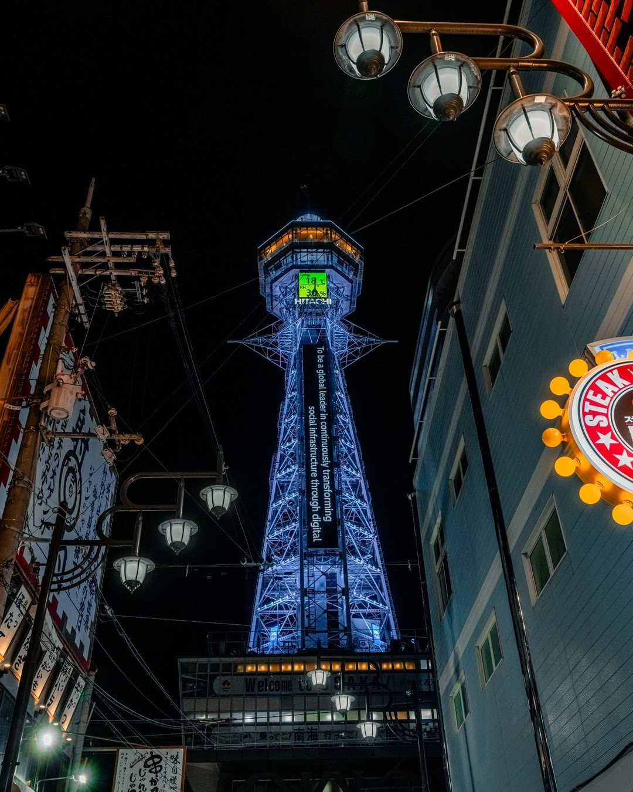
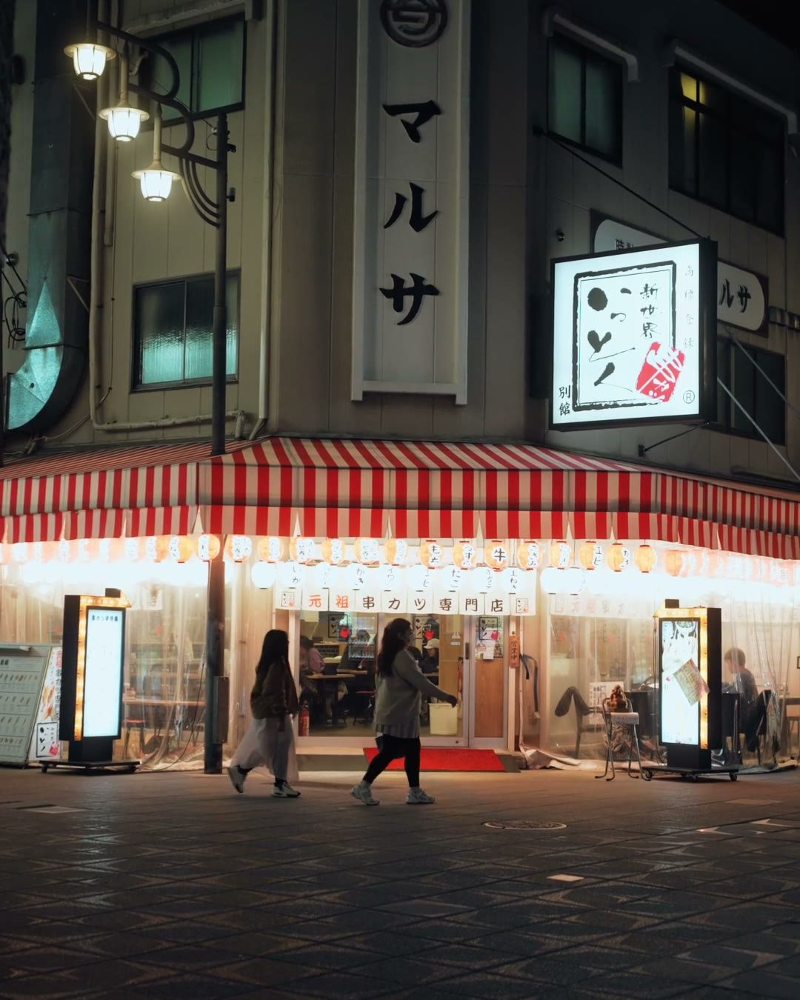
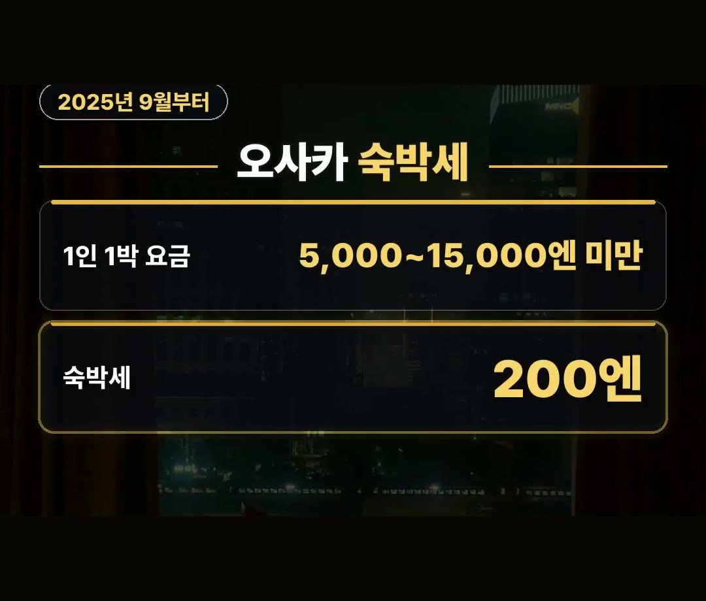
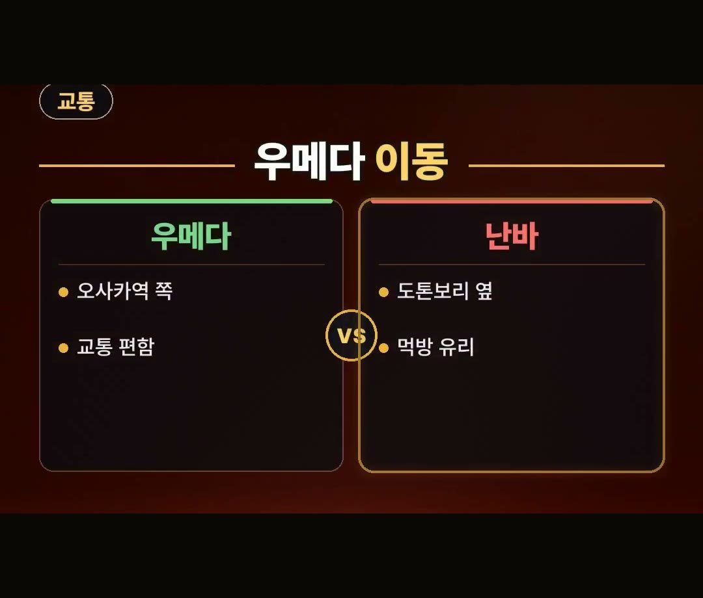
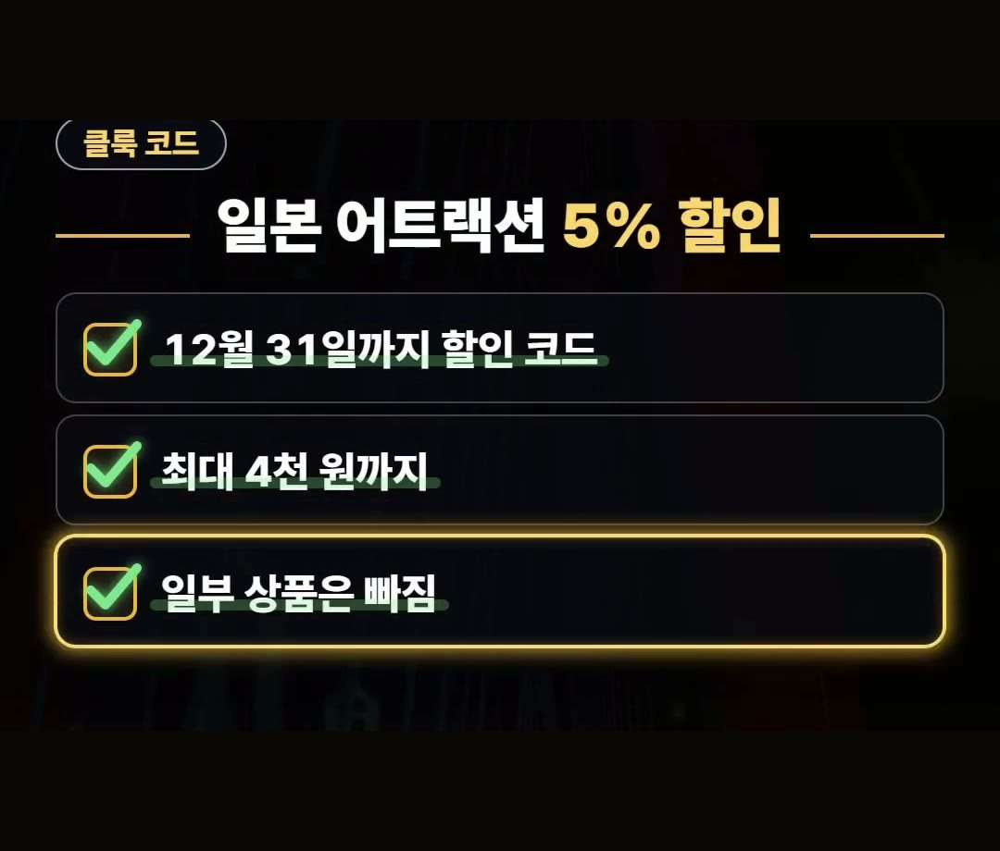

오사카 숙소 추천 | 난바 우메다 특징 및 라피트 요금 안내
※ 이 글에는 제휴 링크가 포함되어 있으며, 링크를 통해 예약·구매하시면 일정 수수료를 받을 수 있습니다. (가격은 같습니다)
※ 이 포스팅은 쿠팡 파트너스 활동의 일환으로, 이에 따른 일정액의 수수료를 제공받습니다.

일본 여행을 준비하면서 항공권을 끊은 뒤 가장 먼저 고민하게 되는 부분이 바로 어디에 머물러야 할지 정하는 숙소 위치 선택입니다.
여행 일정과 동선에 딱 맞는 지역을 고르면 현지에서 이동 시간을 줄이고 더 알차게 시간을 보낼 수 있습니다.
이번 글에서는 일본 오사카 숙소 추천 정보를 찾으시는 분들을 위해 난바와 우메다 두 주요 지역의 핵심 특징과 함께 라피트 요금, 숙박세 정보까지 알차게 알려 드리겠습니다.
오사카 여행을 계획할 때 난바와 우메다의 성격 구분을 잘해 두면 일정 짜기가 한결 수월해져요.
공항에서 난바까지 라피트 레귤러석 디지털 티켓은 1,410엔(약 1만 1천 9백 원)이라는 점도 꼭 기억해 두세요! 💡

일본 오사카 숙소 추천 난바와 우메다 위치 비교
오사카 숙소를 고를 때는 난바와 우메다의 서로 다른 성격을 파악해 두는 것이 중요합니다.
난바냐 우메다냐 차이를 모르면 손해를 볼 수 있습니다.
간단하게 정리하자면 도톤보리 주변에서 먹고 놀기 좋은 곳은 난바이고, 오사카역 쪽이라 교통이 편한 곳은 우메다입니다.
놀기는 난바, 이동은 우메다로 구분해서 본인의 여행 스타일에 맞게 선택하시는 것을 권해 드립니다.

도톤보리 동선에 유리한 난바 지역 특징
난바는 도톤보리 바로 옆에 위치하고 있어서 먹고 놀기 좋습니다.
난바 비즈니스호텔은 블로그 정리 기준으로 1박 10만 원대가 많으며, 이는 시기에 따라 달라집니다.
먹방이나 도톤보리 위주의 관광 동선을 선호하신다면 난바 쪽을 둘러보시는 것이 좋습니다.

오사카 숙박세 변경 사항 확인하기
오사카 숙소를 이용할 때 알아두어야 할 세금 규정도 있습니다.
2025년 9월부터 바뀐 숙박세 기준에 따르면, 1인 1박 요금이 5,000엔 이상 15,000엔 미만인 경우 숙박세는 200엔입니다.
여행 예산을 세우실 때 2025년 9월부터 적용되는 이 오사카 숙박세 금액 항목을 함께 참고해 두시면 더욱 차분하게 준비하실 수 있습니다.

교통이 편한 우메다와 공항 이동 수단
우메다 지역은 오사카역 쪽과 연결되어 있어서 다른 지역으로 이동하기에 편합니다.
우메다로 이동할 때는 하루카나 공항버스를 이용하는 것이 편합니다.
한편 공항에서 난바까지 이동할 때 타는 라피트는 최단 34분이 걸리며, 레귤러석 디지털 티켓 가격은 1,410엔으로 약 1만 1천 9백 원입니다.
일정 동선에 맞춰 라피트나 하루카, 공항버스 중 알맞은 이동 방식을 고르시면 됩니다.
현지에서 인터넷을 편하게 쓰려면 데이터는 이심으로 미리 준비하시는 것을 추천합니다.

클룩 할인 코드 및 어트랙션 정보
여행 예산을 조금이라도 더 아낄 수 있는 팁도 있습니다.
참고로 클룩에서 12월 31일까지 일본 어트랙션 5% 할인 코드를 사용할 수 있습니다.
이 할인 코드는 최대 4천 원까지 할인되며 일부 상품은 제외됩니다.
12월 31일까지 적용되는 혜택인 만큼 입장권이나 투어를 준비하시는 분들은 사전에 혜택을 확인해 보시기 바랍니다.
정리
- 난바는 도톤보리 옆이라 먹고 놀기 좋고, 우메다는 오사카역 쪽이라 교통이 편리합니다.
- 라피트는 공항에서 난바까지 최단 34분 소요되며 레귤러석 디지털 티켓은 1,410엔(약 1만 1천 9백 원)입니다.
- 2025년 9월부터 1인 1박 5,000엔 이상 15,000엔 미만 시 숙박세는 200엔 적용됩니다.
최저가 예약 링크는 아래에 모아 두었어요.
지금 쓸 수 있는 여행사 할인
- 📶 해외 데이터는 이심으로 미리 · 마이리얼트립 마이심 「일본 50% 1,400원~」 · 2개 이상 추가 할인 (마이심 화면 표시 기준 · 10/5 확인 · 값은 바뀔 수 있음)
- 🎟 클룩 일본 어트랙션 5% 할인 코드 「일본어트랙션5%」 (최소 구매 금액 없음 · 최대 4천 원 · 일부 상품 제외 · 쿠폰 취소 시 재발행 불가 · 예산 소진 시 조기 종료 · 12월 31일까지)
※ 여행사 사정으로 조건이 바뀌거나 일찍 끝날 수 있어요. 예약 전에 여행사 화면에서 한 번 더 확인하세요. (2026-10-05 확인)
📌 2026년 10월 기준 정보예요. 가격은 환율·시기에 따라 달라질 수 있어요.
영상 화면: Pexels (Adit Syahfiar, Ali Alcántara, Glenn Langhorst, Hobi Photography, Juhil Bhatt)
사진: Pexels (Talha Resitoglu, Saúl Sigüenza)